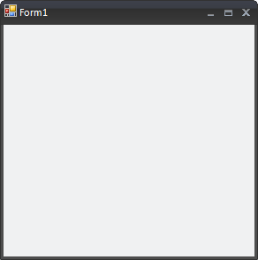

Getting Started
Adding RadForm to your Project
The following tutorial shows the different ways to utilize the RadForm control.
To add a RadForm control to your project you can either choose the RadForm Template from the project's 'Add New Item...' dialog or create a standard Windows Form and change its base class to Telerik.WinControls.UI.RadForm. In the following example we will create a RadForm by manually changing the base class of a standard Windows Form:
Changing the base class of a standard Windows Form to RadForm in C#:
Create a new Windows Forms Application in Visual Studio
Make sure that your project includes references to the following assemblies:
Telerik.WinControls
Telerik.WinControls.UI
Right-click the default form created in the project and select the View Code option.
If you are working in C#: Change the declaration of the form so that it derives from the Telerik.WinControls.UI.RadForm class
[C#] Changing WinForms form to Telerik RadForm
partial class Form1 : Telerik.WinControls.UI.RadForm
Changing the base class of a standard Windows Form to RadForm in VB.NET:
Click the __Show All Files__button in the Solution Explorer
Expand the __Form1.vb__node in the Solution Explorer
Open the __Form1.Designer.vb__file by double-clicking it
Change the declaration in the __Form1.Designer.vb__file so that it derives from the __Telerik.WinControls.UI.RadForm__class:
[VB.NET] Changing WinForms form to Telerik RadForm
Partial Class Form1
Inherits Telerik.WinControls.UI.RadForm
Return to the Design View__of the form. Visual Studio will repaint the form and the ControlDefault(Office2007Blue)__theme will be applied to the form. __RadForm__is ready for use:

Applying a Theme to your Form
To apply a theme to RadForm, you should first drag-and-drop the desired Theme Component from the Visual Studio Toolbox onto your form. By doing this, the new theme will automatically become available for all Telerik UI for WinForms controls including RadForm:
From the Visual Studio Toolbox drag the Office2007Black__component and drop it on your __RadForm

In the Properties Window set the __ThemeName__property of the Form to 'Office2007Black'